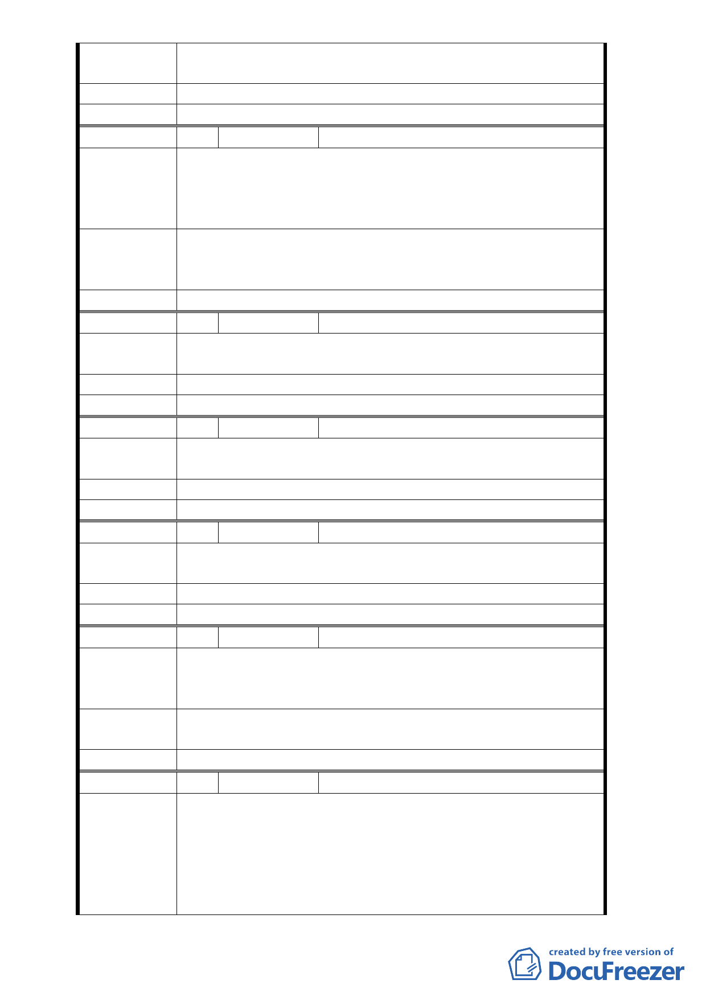

員因此深限囹梧，為彰顯法律之公平正義，特不厭其詳
提出「圖利」之理由，尚請審慎思考為盼！
建議辦法
委員會決議 同編號 1
編 號 3 陳情人 曾濬紳
康樂街 110 巷，前段為 8 米後半段為 6 米，目前吉祥
陳情理由
區地基已施工，開挖後因市政府勘查結果有陰影，致由東
湖 4 號公園紅磚人行道退縮 2 米，錯誤由東湖里替政府官
員買單，顯有圖利他人之嫌。
據貴處將紅磚人行道退至大樹後，是犧牲東湖里里民的作
建 議 辦 法 風，期待希望以公平方法處之，路線會轉彎亦非好事，看
了會讓人作嘔，企求長官正視正義、真理原則。
委員會決議 同編號 1
編 號 4 陳情人 許書雄
陳情理由
好!贊成。不過公園治安不太好，辦桌、唱卡拉 OK、吵鬧
。
建 議 辦 法 會吵鬧的活動一個月不要過一次。
委員會決議 對於公園管理相關意見另請市府民政局研處。
編 號 5 陳情人 陳金龍
陳情理由
1. 沒意見。
2. 週邊可否再植種一些櫻花。
建 議 辦 法 美化公園
委員會決議 同編號 4
編 號 6 陳情人 張羽甄
陳情理由
1. 沒意見
2. 公園髒，且有聚賭嫌疑，少數人才能使用的感覺。
建 議 辦 法 建議儘速改善四號公園環境。
委員會決議 同編號 4
編 號 7 陳情人 黃美娜
1. 沒有意見。
陳 情 理 由 2. 四號公園路燈不夠亮，也會偶爾不亮，安全有疑慮所以
晚上不敢進入使用。
建議辦法
公園內燈光要充足，如有不亮時要打電話的號碼請貼在公
園佈告欄（晚上要有人接的電話）。
委員會決議 同編號 4
編 號 8 陳情人 聯邦合家歡社區吉祥區都市更新會
陳請同意「變更臺北市內湖區一小段 19 地號部分公園用地
為道路用地細部計畫案」
陳情理由
說明：
1. 本案申請都市更新階段經歷重要時程：
89 年 921 大地震後發現社區是海砂屋，歷經原地重建的
挫折，數屆的主委無法完全整合住戶，直到 96 年才得
- 14 -